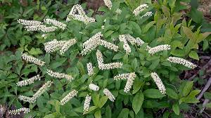

Iteaceae
Sweetspire Family
Iteaceae is a small family of flowering plants in the order Saxifragales, comprising shrubs and small trees. The family includes the genus Itea (sweetspires), known for its attractive, often fragrant flower spikes and good fall color, and the genus Pterostemon. They are found in eastern Asia, eastern North America, southeastern Africa, and Mexico.
Overview
The Iteaceae family consists of two distinct genera: Itea, with about 17 species, and Pterostemon, with 3 species. Members are deciduous or evergreen shrubs or small trees. Itea species are found disjunctly in eastern Asia, eastern North America, and southeastern Africa, while Pterostemon is endemic to Mexico. Several species, particularly Itea virginica and its cultivars, are popular ornamental plants valued for their fragrant, drooping racemes of white flowers and brilliant fall foliage.
Historically, Itea was often placed within Grossulariaceae (gooseberry family) or Saxifragaceae, while Pterostemon was sometimes given its own family, Pterostemonaceae. However, molecular phylogenetic studies have shown they form a distinct clade, now recognized as the family Iteaceae within the order Saxifragales. This order is part of the core eudicots but sits outside the major Rosid and Asterid clades.
The family is characterized by simple, usually alternate and serrated leaves, small 5-merous flowers often borne in racemes, and capsular fruits. While not economically crucial on a large scale, their horticultural value and phylogenetic position make them an interesting group.
Quick Facts
- Scientific Name: Iteaceae J.Agardh
- Common Name: Sweetspire Family
- Number of Genera: 2 (Itea, Pterostemon)
- Number of Species: Approximately 20
- Distribution: Eastern Asia, Eastern North America, Southeastern Africa, Mexico
- Evolutionary Group: Eudicots - Pentapetalae - Saxifragales
Key Characteristics
Growth Form and Habit
Deciduous or evergreen shrubs or small trees.
Leaves
Leaves are simple, usually alternate (rarely opposite), petiolate, and typically serrated or toothed (sometimes entire). Small, deciduous stipules are usually present.
Inflorescence
Flowers are borne in terminal or axillary racemes or panicles, often drooping or arching in Itea.
Flowers
Flowers are typically bisexual (rarely unisexual), actinomorphic (radially symmetrical), and 5-merous. Key features include:
- Hypanthium: A floral cup (hypanthium) is usually present, ranging from short to well-developed.
- Sepals: 5 sepals, usually fused at the base, persistent.
- Petals: 5 petals, free, often white or greenish-white, sometimes narrow.
- Androecium: 5 stamens, alternating with the petals, inserted on the hypanthium or nectar disc. Filaments may be winged in Pterostemon.
- Nectar Disc: An intrastaminal nectar disc is often present.
- Gynoecium: Ovary is superior to partly inferior, composed of 2 fused carpels (Itea) or 5 fused carpels (Pterostemon). Locules correspond to carpel number (2 or 5) with axile placentation and numerous ovules. Styles are fused into one with 2 stigmas (Itea) or 5 distinct or basally fused styles (Pterostemon).
Fruits and Seeds
The fruit is typically a septicidal capsule with 2 valves (Itea) or a loculicidal capsule with 5 valves (Pterostemon). Seeds are small and numerous.
Chemical Characteristics
The family is known to contain tannins. Iridoids, common in some related orders, have also been reported in Iteaceae, consistent with its placement in the Saxifragales alliance.
Field Identification
Identifying Iteaceae involves looking for features typical of shrubs in the Saxifragales order:
Primary Identification Features
- Habit: Shrubs or small trees.
- Leaves: Simple, usually alternate and serrated, with small stipules.
- Inflorescence: Often elongated racemes or panicles of small flowers.
- Flowers: 5-merous, typically white, with 5 stamens.
- Ovary/Styles: Ovary superior to partly inferior, with 2 fused styles (Itea) or 5 styles (Pterostemon).
- Fruit: Dry capsule.
Secondary Identification Features
- Flower Fragrance: Flowers of Itea are often fragrant.
- Fall Color: Many Itea species exhibit good red or purple fall foliage.
- Stamen Filaments: Check if filaments are winged (Pterostemon).
- Habitat: Often found in moist woodlands or along streams (Itea) or drier habitats (Pterostemon).
Seasonal Identification Tips
- Late Spring/Summer: Flowering season for most species. Racemes of white flowers are conspicuous.
- Fall: Excellent fall color in deciduous Itea species. Persistent capsules may be present.
- Winter: Deciduous species show branching patterns; capsules may persist.
Common Confusion Points
Iteaceae shrubs might be confused with members of other families:
- Rosaceae (Rose family - e.g., Spiraea, some Prunus): Many shrubs with white, 5-merous flowers. Rosaceae often have numerous stamens (>10) or different fruit types (follicles, drupes, pomes). Stipules can be more prominent.
- Saxifragaceae (Saxifrage family): Closely related, but often herbaceous or subshrubs with different inflorescence types (e.g., cymose) and sometimes basal leaves.
- Grossulariaceae (Gooseberry family): Related family (Saxifragales) including Ribes (currants, gooseberries). Ribes often have palmately lobed leaves and flowers/fruits with a distinct hypanthium; fruit is a berry.
- Ericaceae (Heath family - e.g., some Vaccinium): Often have urceolate (urn-shaped) flowers and berry fruits. Leaves are often entire.
- Clethraceae (Summersweet family): Shrubs with racemes of white, fragrant flowers, but flowers have superior ovaries and often hairy stamens. Placed in Ericales (Asterids).
Field Guide Quick Reference
Look For:
- Shrubs or small trees
- Leaves simple, usually alternate & serrated
- Small stipules present
- Flowers 5-merous, white, often in racemes
- 5 stamens
- Fruit a capsule
Key Variations:
- Carpel/Style number (2 in Itea, 5 in Pterostemon)
- Leaf shape and margin details
- Inflorescence shape (raceme vs. panicle)
- Deciduous vs. evergreen
Notable Examples
The family includes the well-known ornamental genus Itea and the less common Pterostemon.

Itea virginica
Virginia Sweetspire
A deciduous shrub native to the eastern United States, often found in moist woods and along streams. Popular in cultivation for its fragrant, white flower racemes in early summer and brilliant red-purple fall color. Numerous cultivars exist (e.g., 'Henry's Garnet').

Itea ilicifolia
Holly-leaved Sweetspire
An evergreen shrub native to western China. Notable for its glossy, holly-like leaves with spiny margins and long, drooping, fragrant racemes of greenish-white flowers in late summer.

Itea yunnanensis
(Yunnan Sweetspire)
Another species from China, often a larger shrub or small tree. Features racemes of white flowers and attractive foliage, sometimes cultivated.

Pterostemon mexicanus
(Mexican Pterostemon)
Represents the other genus in the family, endemic to Mexico. A shrub differing from Itea in having flowers with 5 carpels, 5 styles, and distinctive stamens with winged filaments. Fruit is a 5-valved capsule.
Phylogeny and Classification
Iteaceae is placed in the order Saxifragales, a diverse order of core eudicots that sits somewhat apart from the major Rosid and Asterid clades. Saxifragales represents one of the major lineages within the Pentapetalae group (core eudicots excluding Gunnerales).
Within Saxifragales, Iteaceae forms a distinct lineage. Molecular studies place it sister to a clade containing Grossulariaceae (gooseberry family) and Saxifragaceae (saxifrage family). The inclusion of both Itea and Pterostemon within Iteaceae is strongly supported by molecular data, despite their morphological differences (especially in carpel and stamen structure).
Position in Plant Phylogeny
- Kingdom: Plantae
- Clade: Angiosperms (Flowering plants)
- Clade: Eudicots
- Clade: Core Eudicots
- Clade: Pentapetalae
- Order: Saxifragales
- Family: Iteaceae
Evolutionary Significance
Iteaceae holds interest for several evolutionary reasons:
- Biogeography: The disjunct distribution of Itea (Eastern Asia, Eastern North America, Africa) is a classic pattern shared with other plant groups (like Hamamelidaceae, Magnoliaceae), suggesting historical connections across the Northern Hemisphere (e.g., via the Bering Land Bridge or North Atlantic land bridges) and subsequent fragmentation.
- Phylogenetic Position: Its placement within Saxifragales helps refine our understanding of relationships within this diverse basal core eudicot order.
- Morphological Divergence: The distinct differences between Itea (2 carpels) and Pterostemon (5 carpels, winged stamens) within the same small family illustrate morphological evolution following divergence.
- Horticultural Value: Provides examples of plants valued for ornamental traits like fragrance and fall color.